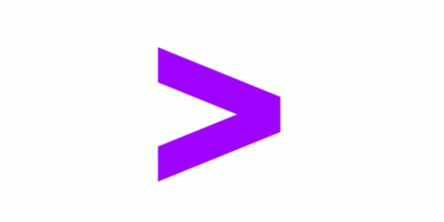

about me
Extract(or):
I enjoy the process of gathering data and its engineering.
Transform(er):
Focusing on getting data ready, for its main showdown is my day job.
Load(er):
I know how to write(to a DB as well).
I'm a Data Scientist, armed with Python spells, R potions, and SQL incantations. I conjure predictions and unlock the secrets of the dataverse, a world where data bends to my will.
skills
Master of Science in Data Science - Northeastern University (Boston, Massachusetts)
• CGPA - 4.0/4.0 (A)
• Relevant Coursework: Supervised Machine Learning, Introduction to Data Management and Processing, Introduction to Programming for Data Science, Unsupervised Machine Learning, Data Mining, Natural Language Processing, Database Management Systems, Algorithms, Artificial Intelligence
Bachelor of Science(Honours) in Mathematics - Sri Sathya Sai Institute of Higher Learning (Bangalore, Karnataka)
• CGPA - 8.2/10 (O grade)
• Among the top 5% across all Mathematics, Physics, Chemistry streams in Bachelors
Intermediate, MPC - Sri Chaitanya Jr. Kalasala (Viveknagar, Kukatpally)
• Marks - 976/1000
• Ranked among top 0.1% among all the students who appeared for the Telangana State Board Exams
• Scored 99 %ile on TS EAMCET
• Scored 97.5 %ile in JEE MAINS 2018
Secondary School(Xth) - Narayana Concept School
• CGPA - 10/10
• Awarded All-round Excellence Award for the academic year 2015-16
• Selected as House Captain( Hansraj) from among 25+ applicants
Accenture Solutions Pvt. Ltd. - Application Development Associate
Microsoft Future Ready Talent - Virtual Internship
Arthashastra Intelligence Databases Pvt. Ltd. - Jr. Data Scientist
Accenture Data Analytics - Virtual Internship
recent projects
LLM & NLP projects
LLM based Q&A system for T-shirts Retail store
User asks questions in a natural language and the system generates answers by converting those questions to an SQL query and then executing that query on MySQL database.
(Google PaLM, LangChain, MySQL, Chromadb as vector store, Hugging Face embeddings, Few-Shot learning, Streamlit UI)

LangChain ChatBot: AI News Research Tool
A user-friendly news research tool designed for effortless information retrieval. Users can input article URLs and ask questions to receive relevant insights from the stock market and financial domain.

Codebasics LLM Q&A system for E-learning company
This is an end-to-end LLM Q&A system for an e-learning company called codebasics (website: codebasics.io) based on Google PaLM and LangChain . They have thousands of learners who uses discord server or email to ask questions about courses and bootcamps. This system will provide a Streamlit UI for students where they can ask questions and get answers.
Language Labs
This is a text analytics application with a user friendly GUI implemented using Python and deployed with the Streamlit package. An application like this reduces the time between Exploratory Data Analysis (EDA) and model building. I have built and integrated many tools for data visualisation and analysis.
Tools that can be accessed from the application:
Word Cloud Generator, N-Gram Analysis, Spam Classifier, Sentiment Analysis, Text Summarizer, POS Tagging, NER
Competing in Mental Wellness iOS App Market (NLP Sentiment Analysis)
Extracted key insights for designing a new mental health mobile app to compete in the mental health iOS app market. Hand-curated a list of top 31 mental health apps, scraped data using the itunes_app_scraper and app_store_scraper and performed sentiment analysis of text reviews and their corresponding ratings to determine what characteristics of Mental Health apps currently available on the iTunes App Store are liked or disliked by users.

Data Engineering Projects

YouTube Video Analysis Data Engineering pipeline
The project aims to automate the extraction of data from a YouTube channel, transform the data into a suitable format, and make it available for analysis through a Power BI dashboard. By following a structured ETL process, this project streamlines data retrieval, preparation, and visualization.

Real-Time Data Engineering Pipeline Using Apache Kafka
This project implements a real-time data pipeline using Apache Kafka, Python's psutil library for metric collection, and SQL Server for data storage. The pipeline collects metrics data from the local computer, processes it through Kafka brokers, and loads it into a SQL Server database. Additionally, a real-time dashboard is created using Power BI.

Sales ETL data engineering pipeline using GCP
This ETL (Extract, Transform, Load) project demonstrates the process of extracting data from a SQL Server database, transforming it using Python, orchestrating the data pipeline with Apache Airflow (running in a Docker container), loading the transformed data into Google BigQuery data warehouse, and finally creating a dashboard using Looker Studio.
HR ETL Data pipeline using Azure
This project is a comprehensive data engineering solution that extracts HR data from a GitHub repository, performs data transformations using Azure services, and creates an interactive HR dashboard using Power BI. The goal is to enable HR professionals and decision-makers to gain insights from the HR data for better workforce management.
Mobile phones Data Analysis Hive Insights
This project demonstrates the process of extracting data from a MySQL database, transferring it using Apache Sqoop, storing it in Hive Data warehouse (the data actually is store in Hadoop Distributed File System (HDFS)), and performing analysis using Hive Query Language (Hive QL) (close to SQL). Then visualize the data in Power BI.

E-commerce ETL Data Pipeline Project
This project focuses on extracting data from the Jumia website using Beautiful Soup, storing it in an Excel file with Pandas, and then transferring the data to a PostgreSQL database using SQLAlchemy and Pandas.

HR ETL Project using OracleDB, PL/SQL, Informatica, Snowflake
This ETL (Extract, Transform, Load) project aims to extract human resources data, clean it using PL/SQL and SQL, integrate it into a Snowflake data warehouse on Azure Cloud using Informatica, and visualize the insights in Power BI.

Real-time Computer Performance Monitoring Dashboard
This Computer Performance Monitoring and Data Visualization project aims to capture, store, and visualize real-time system performance metrics through an end-to-end data pipeline. By leveraging Python, MySQL, SQL Server, and Power BI, we've created a comprehensive solution to enhance decision-making.
Computer Vision Projects
üëïüëóFashion Visual Search using Azure Computer Vision & Azure Cognitive Search
An interactive web app that utilizes vector embeddings to create an efficient and accurate visual search index along with UMAP analysis to search for apparels based on their visual features, such as color, pattern, or texture.

üòÑüéµFacial Emotions based Music Recommendation
The project works by getting live video feed from web cam, pass it through the model that detects facial emotions. Accordingly, the app will rank the recommended songs employing K-means clustering and displays them on screen.
üëãü誂èØÔ∏èControlling Media Player with Hand Gestures
A web app that uses your device's camera to give you touch-free and remote-free control over any media player application (with no special hardware). Constructed a 2D CNN model for feature extraction and classification, and integrated the keyboard keys to hand gestures using PyAutoGUI and OpenCV.
Recommender Systems


Data Science & Machine Learning Projects


Web Development Projects

Self-driving Car projects for Tesla


Contact me
bonam.t11@gmail.com
Phone
8573950779